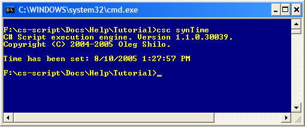

Step-by-step tutorial
This tutorial will guide you through preparation steps for the script (SynTime.cs) which gets time from US Naval Observatory Time Server (http://tycho.usno.navy.mil/cgi-bin/timer.pl) and synchronises the PC clock.
This tutorial demonstrates how to:
NOTE: Only the important code fragments from SynTime.cs will be discussed here.
The script will produce the output similar to one below:

The main method in the script is GetHTML(...). It downloads and returns the content of a web page, which is specified as the "url" method parameter. The GlobalProxySelection is adjusted with provided credentials if proxy authentication is requested.
| static string GetHTML(string url, string proxyUser, string proxyPw) { StringBuilder sb = new StringBuilder(); byte[] buf = new byte[8192]; HttpWebRequest request = (HttpWebRequest)WebRequest.Create(url); if (proxyUser != null) { GlobalProxySelection.Select.Credentials = new NetworkCredential(proxyUser, proxyPw); } HttpWebResponse response = (HttpWebResponse)request.GetResponse(); Stream resStream = response.GetResponseStream(); string tempString = null; int count = 0; while (0 < (count = resStream.Read(buf, 0, buf.Length))) { tempString = Encoding.ASCII.GetString(buf, 0, count); sb.Append(tempString); } return sb.ToString(); } |
| .... //strMyDateTime is something like: Oct. 08, 04:13:14 UTC strMyDateTime = strMyDateTime.Insert(strMyDateTime.IndexOf(",") + 1, GetCurrentYear() + ","); CultureInfo en = new CultureInfo("en-US"); DateTime myDateTime = DateTime.Parse(strMyDateTime, en); ... |
After that DateTime is converted to native WIN32 SYSTEMTIME structure and the system clock are adjusted with new time.
| .... [DllImport("kernel32.dll", SetLastError=true)] static extern int SetSystemTime(ref SYSTEMTIME lpSystemTime); ... SYSTEMTIME st = new SYSTEMTIME(dateTime); SetSystemTime(ref st); ... |